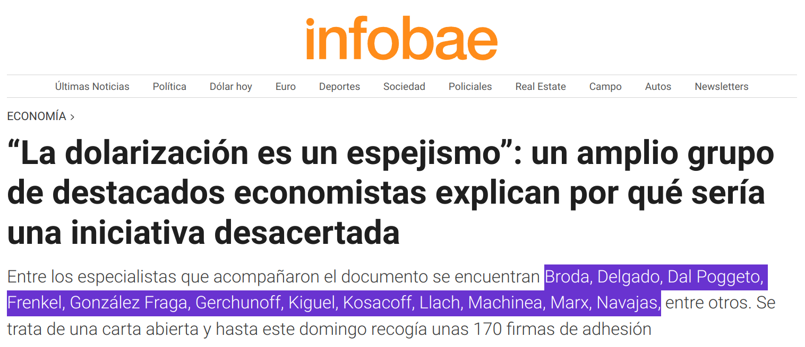
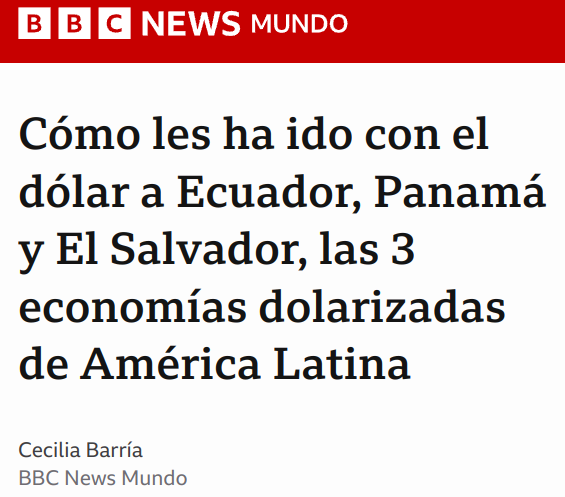

Pero no podemos dejar que el enojo nos lleve a destruir nuestro querido país
Pensemos juntos, sin fanatismos ni chicanas... con honestidad y con FUENTES
Te quiero contar por qué creo que Milei NO debe ser Presidente
Con la siguiente información te voy a mostar que:
Juzgalo vos mismo/a...
Cree que no debe haber derechos laborales. Tu único derecho es el derecho a morirte de hambre.
Quiere que todo explote para lograr sus objetivos. No le importa si te lleva puesto a vos.
Votó en contra de leyes tan básicas como que el estado ayude a cuidar a nuestros bebés.
Usa como insulto un trastorno genético, degradando a todos los que lo padecen.
Se expresa de forma violenta... con imágenes de su mente que son macabras, como "niños envaselinados"...
... o violaciones.
Venta de organos, Venta de niños, Libre portación de armas
¿Se puede tener un presidente que quiere habilitar la venta de niños o que todos anden armados?
Está a favor de un mercado de bebés (y lo propone para resolver los embarazos no buscados)
Quiere que haya libre portación de armas.
Esto mismo produce cientos de muertes al año en EEUU, tiroteos en escuelas, etc.
Cree que los problemas se resuelven comprando y vendiendo todo... incluso los órganos
Es tan FANÁTICO del mercado que tiene propuestas desopilantes, como privatizar las calles
Arancelar o privatizar la educación, la salud, los subsidios que nos ayudan a acceder a servicios básicos...
Milei cree que no tenemos que tener derechos ni ayuda alguna
(si naciste pobre te morirás pobre)
La educación tiene que ser PAGA
La salud también...
...y todo eso es porque no cree en la igualdad de oportunidades. Si sos pobre seguirás siendo pobre. Tu esfuerzo vale menos que el de un rico.
Todo debe ser privado, hasta los trenes
Dolarizar sin dólares, romper relaciones con nuestro principales socios comerciales, quitar todos los subsidios, son ejemplos de políticas que dañarán fuertemente nuestro sistema productivo y nuestros bolsillos.
La propuesta de dolarización de Milei no tiene ningún sustento
Economistas de TODAS las tendencias (de derecha a izquierda, de ortodoxos a heterodoxos) escribieron un documento conjunto en donde denuncian que sólo se lo puede realizar con una hiperinflación que destruya los salarios o tomando una DEUDA AÚN MAYOR a la que tenemos con el FMI
No hay paises desarrollados en el mundo cuya moneda sea una extranjera.
En América sólo lo hicieron Ecuador, El Salvador y Panamá. Algunas citas de esta análisis de la BBC:
Milei incluso celebró la corrida cambiaria del dolar que ayudaba a su programa de dolarización sin tener consideración por el impácto que esa corrida tuvo en los precios y la inflación y, por ende, en el bolsillo de todos.
Si el ajuste que padecemos ahora te parece mucho, considerá que Milei quiere hacer un ajuste aún más duro que el del FMI.
Milei planea la eliminación de TODOS los subsidios, encareciendo el transporte, nafta, electricidad, gas, etc.
Los planes de Milei para la economía están sesgados por un fanatismo ideológico: en su guerra imaginaria contra "el comunismo" plantea que hay que romper relaciones con nuestros dos principales socios comerciales.
...y además reivindica a la dictadura
¿Se puede confiar en alguien así para dirigir un país?
Para el la democracia no es un asunto cívico y moral, es un problema matemático que no sabe resolver
Se refiere al genocidio de la dictadura como un "exceso", usando la misma justificación que dio el dictador Massera en los jucios del Nunca Más.
agrede a las mujeres y es intolerantes con la diversidad sexual y de género.
¿No debería un presidente ser ecuánime y tolerante?
En uno de muchísimos ejemplos, agredió a una panelista en un programa de tv y al no querer retractarse lo invitarona retirarse.
En 2018 agredió a una periodista por opinar distinto y fue obligado judicialmente a pedir disculpas e ir al psicólogo por ello .
No sólo quiere cerrar el Ministerio de la Mujer... también quiere eliminar la ESI, que ha permitido a muchas niñas aprender a protejerse de posibles violadores o tratos indadecuados de otras personas.
Dice respetar "el proyecto de vida del otro", pero se burla de las identidades de género de forma humillante.
Su vicepresidenta está visiblemente incómoda con aceptar el matrimonio igualitario, que otorga igualdad de derechos a homosexuales.
Su proyecto político ningunea a Malvinas
Milei se siente identificado con Thatcher, la primer ministra de Inglaterra cuando nos declararon la Guerra de Malvinas
Odia al Papa argentino, por puro sesgo ideológico (ve comunistas en todos lados)
Sus relaciones internacionales sólo obedecen al fanatismo ideológico. Plantea romper relaciones con nuestros dos principales socios comerciales.
Está tan cegado por su dogmatismo que niega los problemas de la contaminación y el daño que le hacemos al planeta
Cree que el calentamiento global es un "invento marxista". Usa esa teoría conspirativa para negar lo que afirman ABSOLUTAMENTE TODAS las instituciones científicas del mundo: que el planeta se calienta por el uso de hidrocarburos.
Hasta defiende la contaminación de ríos, aduciendo una teoría económica que no aceptarían en ninguna universidad del mundo.
Pero se unió a las personas que denunciaba como "casta" hasta hace 3 semanas...
¿Se puede confiar en alguien que vende así su ideales?
Pasó de denostar a Macri a ser su aliado en poco tiempo ... ¿Por que lo hizo?¿Lo habrán comprado?¿Quien gobernaría si gana Milei?
Se la pasó insultando a Juntos por el Cambio y a los Radicales... y ahora mendiga su voto
Estamos mal, pero podemos estar mucho peor. Aún si nuestro cirujano no logra curarnos (aún) no lo cambiaríamos por un carnicero. Milei no es apto para manejar un país. Sus ideas son crueles, dogmáticas, conspiranóicas e inhumanas.
Aún así, es válido el planteo: "No me gusta Massa, no me gusta el peronismo y con él en el ministerio de economía nos está yendo mal"
Dejame decir dos palabras más sobre eso
En un balotaje tenemos que optar por quien va a gobernar, por mas que ninguno nos guste. Es una elección pragmática, no de ideales. Es por eso que muchos conocidos antiperonistas, como Gargarela o Meijide, se han pronunciado por apoyar a Massa.
¿Dejaron de ser anti-peronistas? No, sólo están optando por lo menos malo, por que la opción de Milei les parece peligrosa y antidemocrática
Milei, desde que se asoció con Macri (ex-casta) adoptó el discurso del "cambio". Ese discurso es un engaño
Ya es inevitable que haya un cambio. El kirchnerismo perdió el poder en su interna. Massa no es kirchnerista y no es un títere de nadie. Además, cambiar por cambiar no es una virtud. Siempre podemos cambiar para peor. Hay que elegir QUE CAMBIO queremos.
No es lo mismo ser ministro que presidente. Y en un año con la peor sequía y la mayor deuda en décadas es imposible juzgar cómo sería su real desempeño en un gobierno propio.
Aún así, NADA de lo que propone Milei está en condiciones de garantizar que tendrá éxito donde el gobierno actual falló. Es fácil frenar la inflación detonando al país. Lo difícil es hacerlo sin abandonar a las personas que laburan día a día.
Nadie va a juzgar tu voto. Nadie tiene por qué saberlo, además, porque es secreto
En un Balotaje el voto no es adhesión a un proyecto. Sólo es optar por algo de lo que hay.
Corrupción hubo y habrá en todos los gobiernos
Si Milei tenía alguna chance de evitar eso la terminó de eliminar al hacer su pacto de gobierno con Macri y lo que el mismo llama casta.
Resolver el problema de la corrupción es algo por lo que tenemos que luchar día a día en cualquier gobierno. No es ESO lo que se vota el 19 de Noviembre
Podemos darle el poder a una persona cruel, con teorías absurdas, propuestas inhumnas y anti-patria
O podemos tratar de optar por una persona más normal, que nos permitirá seguir peleando el día a día sin que detone todo.